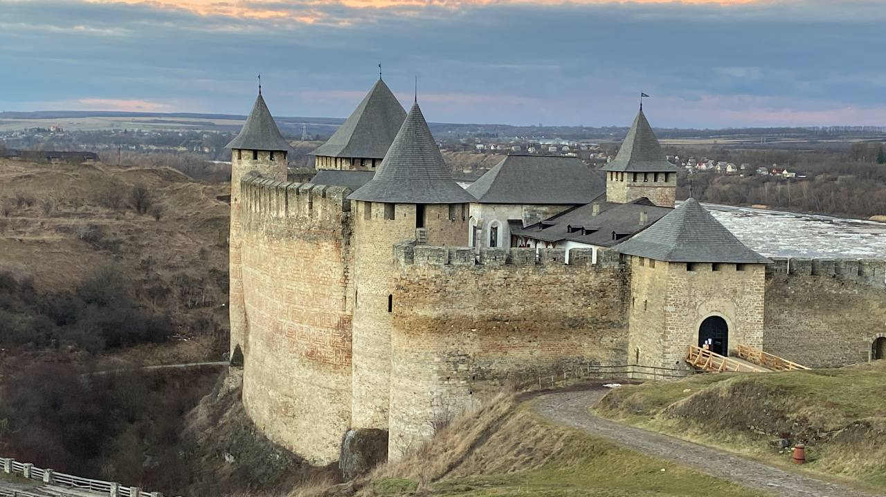

The Khotyn Fortress is a fortress located on the right bank of the Dniester River in Khotyn, Chernivtsi region of western Ukraine. The Khotyn Fortress' beginning goes back to the Khotyn Fort, which was built in the 10th century by Prince Volodymyr Sviatoslavovych as one of the border fortifications of southwestern Kievan Rus', after he added the land of present-day Bukovina to his controlю. Was the central battlefield in the Battle of Khotyn in 1621.
| City and Region | Coordinates |
|---|---|
| Khotyn, Chernivtsi region | 48°31`19″N 26°29`54″E |